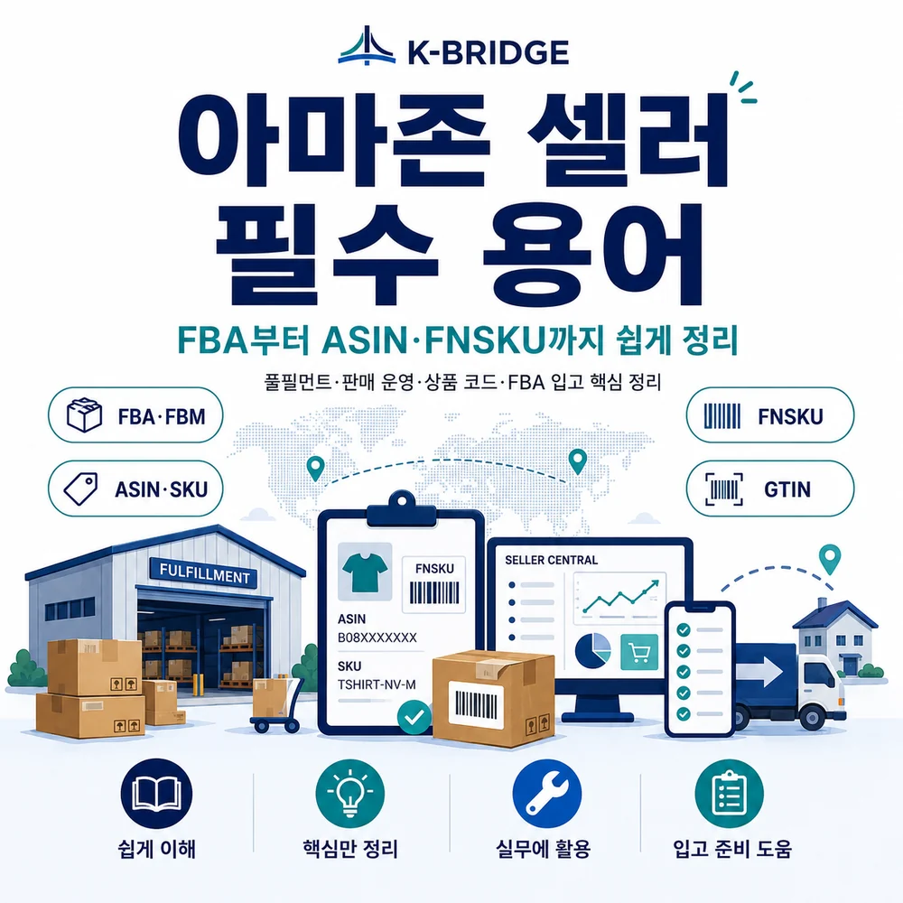
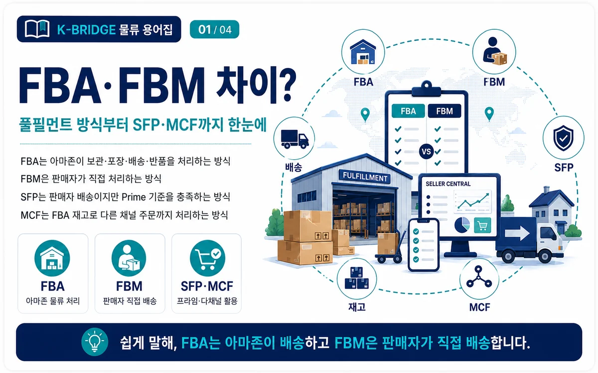
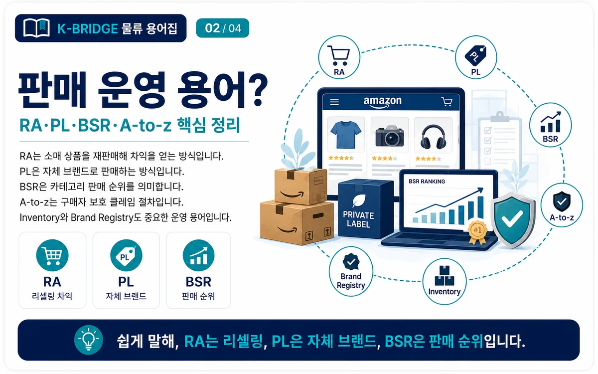
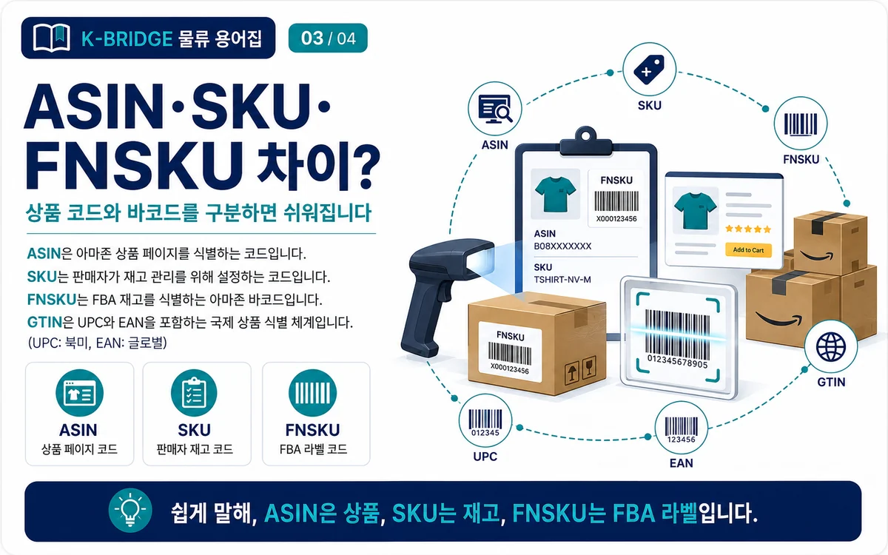
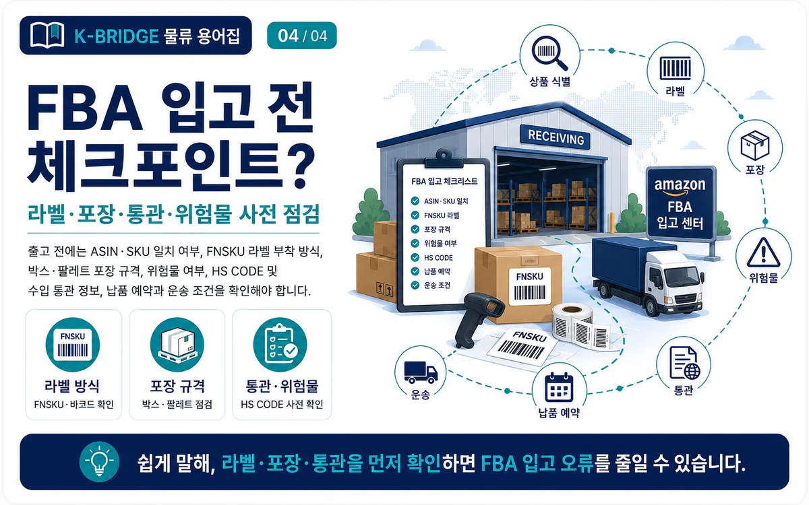

핵심 요약
FBA·FBM은 주문 처리 방식, RA·PL은 판매 모델, ASIN·SKU·FNSKU는 상품과 재고를 구분하는 코드입니다. UPC와 EAN은 GTIN 체계에 포함되는 국제 상품 식별번호이며, FBA 입고 전에는 라벨·포장·통관 정보를 함께 확인해야 합니다.
아마존 용어는 먼저 4가지 영역으로 나누면 쉽습니다
직접 답변: 아마존 셀러 용어는 ① 누가 주문을 처리하는지, ② 어떤 방식으로 상품을 판매하는지, ③ 상품과 재고를 어떤 코드로 구분하는지, ④ FBA 창고에 어떻게 입고하는지로 나누면 이해하기 쉽습니다.
풀필먼트
재고 보관, 피킹, 포장, 배송, 반품을 아마존과 판매자 중 누가 담당하는지 구분합니다.
판매 운영
리셀링과 자체 브랜드, 판매 순위, 구매자 보호 클레임 등 상품 운영 방식을 의미합니다.
상품 식별 코드
아마존 상품 페이지, 판매자 재고, FBA 재고 소유자를 서로 다른 코드로 구분합니다.
입고·라벨
상품 바코드, FNSKU, 박스 라벨, 포장 규격, 위험물과 수입 통관 정보를 확인합니다.

FBA·FBM 등 아마존 풀필먼트 용어
Fulfillment by Amazon
판매자가 재고를 아마존 풀필먼트 센터로 보내면 아마존이 보관, 피킹, 포장, 배송과 고객 서비스·반품을 담당하는 방식입니다.
Fulfilled by Merchant
판매자가 자신의 창고 또는 외부 물류센터에서 재고를 관리하고 주문별 포장과 배송을 직접 책임지는 방식입니다.
Seller Fulfilled Prime
판매자가 주문을 처리하면서 일정한 자격과 성과 기준을 충족해 Prime 배지를 표시하는 프로그램입니다. 판매 국가와 계정별 제공 여부를 확인해야 합니다.
Multi-Channel Fulfillment
아마존의 물류망과 FBA 재고를 활용해 자사몰이나 다른 온라인 판매 채널에서 발생한 주문까지 처리하는 다채널 풀필먼트 서비스입니다.
실무 포인트: FBA와 FBM은 반드시 둘 중 하나만 선택하는 방식이 아닙니다. 상품의 크기, 회전율, 마진, 보관비, 계절성에 따라 상품별로 조합할 수 있습니다.

RA·PL·BSR 등 판매·운영 용어
Retail Arbitrage
오프라인 소매점에서 할인 상품을 구입한 뒤 온라인에서 더 높은 가격으로 재판매해 차익을 얻는 방식입니다. 브랜드·카테고리 승인과 정품 증빙 요건을 사전에 확인해야 합니다.
Private Label
제조사에 상품 생산을 맡기되 판매자가 자신의 브랜드와 패키지로 판매하는 방식입니다. 상품 차별화, 상표, 품질 관리, 브랜드 보호가 중요합니다.
Best Sellers Rank
같은 카테고리 안에서 해당 상품의 판매 성과를 상대적으로 보여주는 순위입니다. 일반적으로 숫자가 낮을수록 카테고리 내 판매 순위가 높습니다.
A-to-z Guarantee Claim
판매자 배송 주문의 배송 시점, 상품 상태, 반품 경험 등에 문제가 있을 때 구매자가 제기할 수 있는 보호 절차입니다. 판매자는 메시지와 배송 증빙을 체계적으로 관리해야 합니다.
Inventory
판매 가능한 상품의 재고를 의미합니다. 가용 재고, 예약 재고, 입고 중 재고, 장기 보관 재고처럼 상태별로 구분해 관리합니다.
Brand Registry
등록된 브랜드의 권리 보호와 브랜드 콘텐츠·분석 기능을 지원하는 프로그램입니다. PL 상품을 운영할 때 함께 검토되는 경우가 많습니다.

ASIN·SKU·FNSKU·GTIN은 무엇이 다른가요?
ASIN은 상품 페이지, SKU는 판매자 재고, FNSKU는 FBA 재고 소유자, GTIN은 국제 상품 식별번호 체계를 구분하는 코드입니다.
| 용어 | 누가 부여하나 | 무엇을 식별하나 | 실무에서 보는 위치 |
|---|---|---|---|
| ASIN | 아마존 | 아마존 카탈로그의 상품 | 상품 상세페이지, 재고·주문 보고서 |
| SKU | 판매자 | 판매자가 관리하는 상품·옵션 재고 | Seller Central 재고 관리, ERP·WMS |
| FNSKU | 아마존 시스템 | FBA 상품과 판매자 재고의 연결 | 아마존 바코드 라벨, FBA 배송 계획 |
| GTIN | GS1 체계 | 전 세계 유통 상품 | UPC·EAN·ISBN 등 상품 바코드 |
ASIN - Amazon Standard Identification Number
아마존 카탈로그에 등록된 상품을 식별하는 10자리 영문·숫자 조합입니다. 동일한 상품에 여러 판매자가 오퍼를 등록하면 같은 ASIN의 상품 상세페이지를 공유할 수 있습니다.
SKU - Stock Keeping Unit
판매자가 재고 관리를 위해 직접 만드는 코드입니다. 색상, 사이즈, 모델, 포장 단위가 다르면 서로 다른 SKU로 관리하는 것이 일반적입니다.
FNSKU - Fulfillment Network Stock Keeping Unit
아마존 풀필먼트 네트워크에서 FBA 재고를 식별하는 코드입니다. 같은 ASIN이라도 판매자 또는 재고 소유 관계에 따라 FNSKU가 다를 수 있습니다.
자주 하는 실수: ASIN과 FNSKU를 같은 코드로 생각하거나 제조사 바코드와 아마존 바코드를 동시에 노출해 스캔 오류를 만드는 경우가 있습니다. 실제 출고 라벨은 Seller Central 배송 계획의 지시를 기준으로 확인해야 합니다.
UPC·EAN·ISBN과 GTIN의 관계
GTIN(Global Trade Item Number)은 국제적으로 상품을 식별하는 번호 체계의 상위 개념입니다. GS1 기준으로 UPC는 주로 12자리 GTIN-12, EAN은 주로 13자리 GTIN-13을 의미합니다.
| 용어 | 일반적인 형태 | 주요 용도 | 주의사항 |
|---|---|---|---|
| UPC | GTIN-12 | 북미 소비재 상품 식별 | 공식 발급·소유 정보를 확인합니다. |
| EAN | GTIN-13 | 유럽과 전 세계 소비재 상품 식별 | 한국 유통 바코드도 이 체계를 사용합니다. |
| ISBN | 도서 식별번호 | 책과 출판물 식별 | 일반 소비재 UPC와 용도가 다릅니다. |
| GTIN 면제 | 승인 조건별 상이 | 일부 브랜드·상품의 식별번호 예외 | 카테고리와 브랜드 조건에 따라 별도 심사가 필요합니다. |

FBA 입고 전 실무 체크포인트
- 상품 식별: ASIN, SKU, UPC·EAN과 실제 상품 모델·옵션이 정확히 일치하는지 확인합니다.
- 라벨 방식: 제조사 바코드 사용 대상인지 FNSKU 라벨 부착 대상인지 배송 계획에서 확인합니다.
- 스캔 가능성: 기존 바코드가 여러 개 노출되거나 라벨이 접힘·곡면·모서리에 걸리지 않도록 부착합니다.
- 포장 규격: 세트 상품, 폴리백, 완충, 유리·액체, 의류, 날카로운 제품 등 품목별 준비 기준을 확인합니다.
- 박스·팔레트 라벨: 상품 단위 라벨과 외부 운송 박스 라벨을 구분하고 각 박스에 올바른 라벨을 부착합니다.
- 위험물: 리튬배터리, 에어로졸, 화학제품, 인화성 물질은 SDS와 운송·보관 규정을 사전에 검토합니다.
- 수입 통관: 판매 국가의 수입자, 세금·관세 부담 주체, HS CODE, 원산지, 인증 요건을 출고 전에 확정합니다.
- 예약과 납품: 지정 풀필먼트 센터, 납품 일정, 배송사 예약, POD 확보 등 최종 마일 조건을 확인합니다.
아마존의 프로그램, 라벨 정책, 수수료와 입고 기준은 판매 국가·상품 카테고리·계정 상태에 따라 달라지고 수시로 변경될 수 있습니다. 실제 출고 전 Seller Central의 최신 배송 계획과 공식 도움말을 다시 확인하세요.
자주 묻는 질문
Q. FBA와 FBM을 한 계정에서 함께 사용할 수 있나요?
Q. ASIN과 SKU는 같은 번호인가요?
Q. UPC와 EAN은 GTIN과 어떤 관계인가요?
Q. FNSKU는 모든 FBA 상품에 반드시 필요한가요?
Q. 한국에서 미국 FBA 창고로 보낼 때 가장 먼저 확인할 내용은 무엇인가요?
아마존 FBA 입고와 국제운송이 필요하다면 케이브릿지와 확인하세요
품명, 수량, 박스 규격, 중량, 출발지, 판매 국가와 FBA 목적지만 정리해도 해상·항공 운송, 통관, 라벨·포장 조건과 납품 방법을 검토할 수 있습니다.